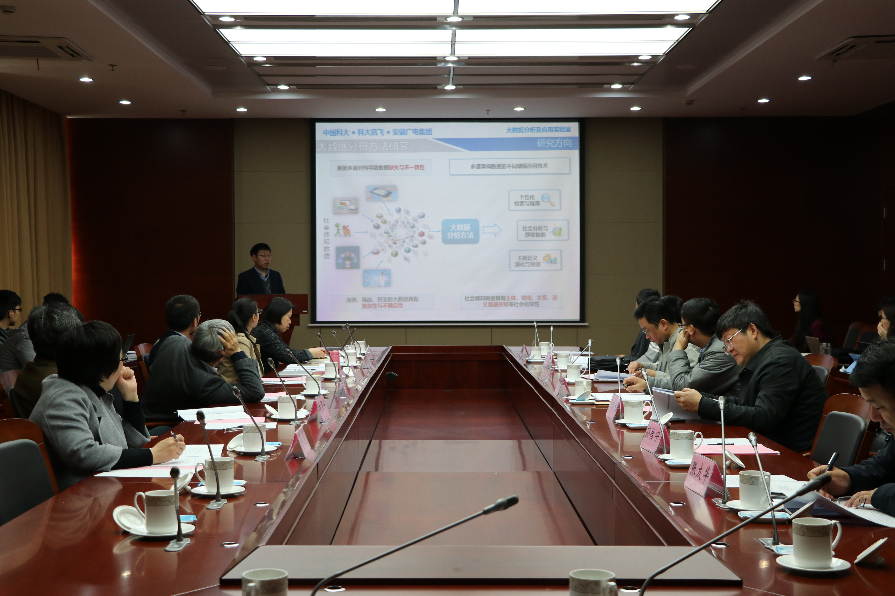
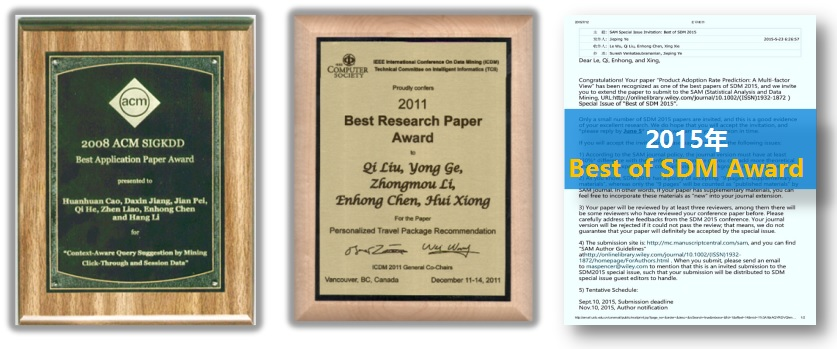
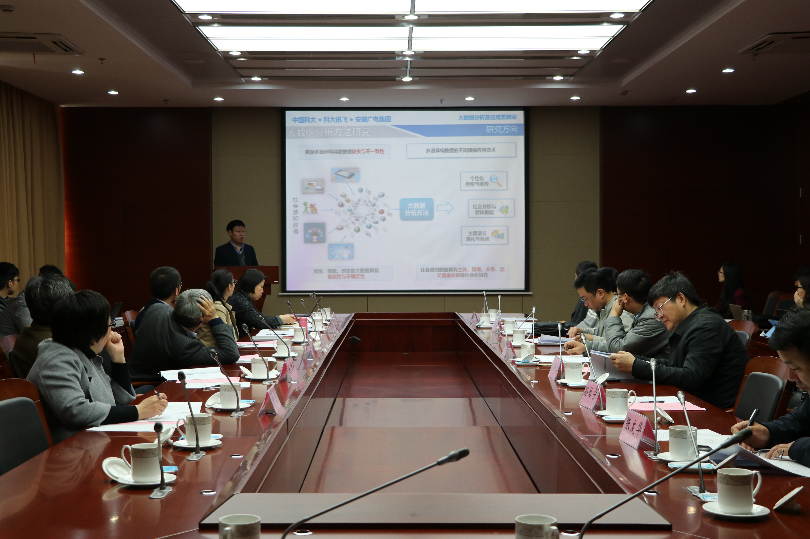
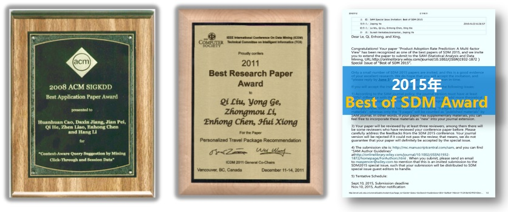

大数据分析与应用安徽省重点实验室（Anhui Province Key Laboratory of Big Data Analysis and Application），学科领域为电子信息，由中国科学技术大学、科大讯飞股份有限公司（以下简称科大讯飞公司）和安徽广电传媒产业集团有限责任公司（以下简称安徽广电集团）三方共建。 其中，作为依托单位的中国科学技术大学，是我省乃至我国大数据分析与应用方向的优势研究单位；同时，作为共建单位的科大讯飞公司和安徽广电集团，不仅拥有规模庞大的大数据云平台以及优质数据资源，而且具有丰富的大数据技术产业化经验；更为重要的是，经过多年的合作，共建三方已经形成了强强联合、优势互补的稳定合作局面，围绕大数据分析与应用方向，建立了大数据产学研合作平台，在科研平台、产业平台和数据平台三个方面都拥有良好的科研和产业环境。 实验室建设地点为中国科学技术大学科技实验楼西楼，建设项目负责人陈恩红教授，联系电话0551-63601558。
我国“十三五”规划纲要推动了国家大数据战略的实施，作为当前科技创新的主要源动力，大数据分析技术已成为加速推进公共服务、文化教育、智慧城市、商务智能等相关的安徽省重点领域发展的关键所在。为了推动大数据产业的发展，安徽省已发布多个纲领性文件，如《安徽省运用大数据加强对市场主体服务和监管实施方案》、《安徽省加快推进“互联网+”行动实施方案》，加速推进创新型经济强省、文化强省、生态强省的建设步伐。在此背景下，实验室针对国家战略规划和安徽省创新发展对大数据技术的迫切需求，瞄准大数据分析的当前挑战及发展前沿，在中国科学技术大学、科大讯飞公司及安徽广电集团的已有科研基础上，拟在大数据分析方法、智慧教育、智能人机交互和全媒体智能服务四个方向有所突破。
在总体上，建设成为国内领先、国际知名的大数据研究平台、创新人才培养高地、科研成果转移转化基地，引领我省大数据产业发展，推动相关产业转型升级。具体而言，以安徽省地方经济特色与行业应用需求为牵引，探索大数据融合、学习、分析、挖掘新方法，取得一批国际一流水平的理论成果，形成一批大数据分析技术方面的发明专利，培养一批创新能力突出的研究生和青年人才，引领我省重点发展领域的大数据分析技术行业应用，建成大数据领域的国内领先、国际知名研发机构。
在建设期内，依依托中国科学技术大学、科大讯飞公司和安徽广电集团的互补优势，建立以四个核心技术研究室为主体的研究团队；在大数据分析理论与方法上，研发一批具有国际水平的研究成果，申请一批具有自主知识产权的发明专利；培养一批具有创新研究或系统研发能力强的研究生；引进和培养国家青年千人计划、万人计划、国家杰青或优青等国家级人才，培养教授和副教授等；建成我省高校教师访学基地；在智慧教育、人机交互和全媒体等领域，开展技术研发和行业示范应用；建成一个国内先进、国际知名的具有持续创新能力的创新团队。
 



| 陈恩红 教授 国家杰出青年科学基金获得者、中国计算机学会会士 |
 |
陈发来 教授 国家杰出青年科学基金获得者、中国工业与应用数学学会常务理事 |
| 谭昶 博士、中国计算机学会大数据专家委员会委员 |
 |
毛四方 博士、第一批“六个一批双百人才” |
| 陈国良 教授 中国科学院院士 |
| 徐林莉 副教授 |
 |
刘贵全 副教授 |
| 刘淇 副教授 |
主要研究能够有效处理社会感知数据、教育数据、人机交互数据等具有实际应用背景和特点的大数据学习、分析的理论、模型与方法，为大数据分析的实际应用提供坚实理论基础。拟开展的核心技术研究方向包括：多源数据融合与统一表征方法，高维、动态、多源异构数据建模方法，机器学习与数据挖掘方法，面向语音、图像、文本大数据的深度学习模型等。
主要研究对象为教育领域所涵盖的学生学习、教师课堂教学、校园教育管理等应用中的多源异构数据，为解决因材施教以及教育不均衡化问题等提供新视野、新思路、新尝试。拟研究的方向包括：教学与学习场景中的学习行为模式挖掘技术、智慧学习环境的评测技术等；学习者的认知诊断技术、学习资源的表征方法、个性化学习资源推荐技术、自适应学习方法等；教育管理场景中的教育舆情分析技术、教育资源的自动化标注和智能配置方法等。
主要研究对象为人机交互过程中或人机交互设备、网络等产生的数据资源，主要包含移动设备应用日志大数据、移动时空大数据、通信网络大数据等。这些数据来源众多，其异构、时效性高等特性为分析和应用带来了挑战。拟开展的该方向核心技术研究包括：人机交互大数据平台研究，人机交互大数据分析技术研究，人机交互大数据应用（包括智慧交通、智能政务管家、个性化交互式服务等）研究。
主要研究对象为广电文化传媒领域的各类多样性数据，包括各类广告投放、监测数据、广电网络用户数据、电视电商购物消费者数据等。旨在设计合理的信息化服务和营销解决方案，实现用户文化娱乐需求的精准定位，打造以融合服务为核心的“数字家庭”服务新模式，为政府决策、企业发展规划提供有效的参考。拟开展的核心技术研究包括：基于大数据的广电全媒体智能服务研究，基于消费行为大数据的广告精准投放研究，基于大数据分析的广电用户文化消费需求挖掘和应用研究等。
在数据量快速增长的当下，每一天都有新的问题被提出和解决，而无论未来的挑战是怎样的，我们都已经做好了准备。
我们在Nature Communications、IEEE/ACM Transactions等国际知名期刊和重要国际学术会议KDD、IJCAI、WWW、SIGIR、AAAI、ICDM、NIPS、ACL、ICML、CVPR、ICCV、SIGGRAPH、ECML-PKDD、CIKM、SDM等发表学术论文400余篇。 团队的研究成果引起国内外同行的高度关注，Google Scholar不完全统计累计他引次数超过15000次
我们在近三年共获得发明专利19项，其中国际2，国内17项。
| 序号 | 专利名称 | 授权号 | 发明人或专利人 | 授权国别 |
|---|---|---|---|---|
| 1 | Method and apparatus for holistic modeling of user item rating with tag information in a recommendation system | US20140074639A1 | JileiTian, TengfeiBao, Happia Cao, Enhong Chen | 美国 |
| 2 | Method and system of determining earthquake parameters | US20130261982A1 | Jie Zhang, Haijiang Zhang, Enhong Chen, Yi Zheng, WenhuanKuang | 美国 |
| 3 | 对移动设备用户进行个性化新闻推荐的方法和装置 | ZL20111039130 0.3 | 陈恩红、怀宝兴、宝腾飞 | 中国 |
| 4 | 一种基于自回归模型的在线连载内容流行度预测方法 | ZL201410161457.00 | 常标、祝恒书、谭昶、陈恩红、刘淇、熊辉 | 中国 |
| 5 | 一种实现多关键词同步输入系统及方法 | ZL201210519445.1 | 科大讯飞 | 中国 |
| 6 | 语音查询方法及系统 | ZL201210590971.7 | 科大讯飞 | 中国 |
| 7 | 一种基于消费者行为数据分析和分类技术的在线广告分类推送方法及其系统 | ZL201510447849.8 | 安徽广电集团 | 中国 |
| 8 | 一种基于视频内容以及回归方法的广告监测技术 | ZL2011104035788 | 安徽广电集团 | 中国 |
我们近三年来承担国家级项目33项，省部级项目10项，横向课题12项
| 序号 | 项目名称 | 项目编号 | 项目来源 | 起讫时间 | 负责人 |
|---|---|---|---|---|---|
| 1 | 面向社交网络的信息传播规律及用户行为演化研究 | 2014AA015203 | 国家863计划 | 2014-2016 | 陈恩红 |
| 2 | 网络大数据协同建模与序列分析的理论和方法研究 | 已通过答辩 | 国家自然科学基金联合重点项目 | 2017-2020 | 陈恩红 |
| 3 | 高性能计算环境应用服务优化关键技术研究 | 2014AA01A302 | 国家863计划子课题 | 2014-2016 | 李京 |
| 4 | 复杂低空飞行自主避险仿真验证 | 2011CB707006 | 国家973计划 | 2011-2015 | 唐珂 |
| 5 | 基于云计算的国家级金融数据分析与信息服务关键技术研究与应用 | 2012BAH17B03 | 国家科技支撑计划 | 2012-2013 | 陈恩红 |
| 6 | 基于云计算的国家金融数据分析与信息服务关键技术与应用 | 2012BAH17B03 | 国家科技支撑计划子课题 | 2012-2013 | 陈恩红 |
| 7 | 基于情景感知的知识导航 | 2016YFB1000904 | 国家重点研发计划课题 | 2016-2020 | 陈恩红 |
| 8 | 情境数据挖掘及应用 | 61325010 | 国家杰出青年科学基金 | 2014-2017 | 陈恩红 |
| 9 | 高效能进化计算的关键技术研究 | 61329302 | 国家自然科学基金海外及港澳学者联合研究基金项目 | 2014-2017 | 唐珂 |
| 10 | 信息网络中基于结构及属性的社区挖掘研发 | 61375060 | 国家自然科学基金 | 2014-2017 | 徐林莉 |
| 序号 | 项目名称 | 项目编号 | 项目来源 | 起讫时间 | 负责人 |
|---|---|---|---|---|---|
| 1 | 基于情境数据挖掘技术的语音云平台个性化推荐系统研发与应用 | 1301022064 | 安徽省科技攻关计划项目 | 2014-2015 | 陈恩红 |
| 2 | 计算科学及其应用基础的研究 | B07033 | 教育部 | 2011-2016 | 陈发来 |
| 序号 | 项目名称 | 项目编号 | 项目来源 | 起讫时间 | 负责人 |
|---|---|---|---|---|---|
| 1 | 中国科大-联想云计算联合实验室合作协议 | ES0110000006 | 联想集团 | 2010-2013 | 李京 |
我们近五年共获得国家、省部级奖励和国际学术奖励二十余项
| 序号 | 获奖项目名称/获奖者 | 奖励名称 | 等级 | 获奖时间 | 授予机构 |
|---|---|---|---|---|---|
| 1 | 智能语音交互关键技术及应用开发平台 | 国家科学技术进步奖 | 二等奖 | 2011 | 国务院 |
| 序号 | 获奖项目名称/获奖者 | 奖励名称 | 等级 | 获奖时间 | 授予机构 |
|---|---|---|---|---|---|
| 1 | 情境数据挖掘方法及应用研究 | 教育部自然科学奖 | 二等奖 | 2012 | 教育部 |
| 2 | 面向复杂优化问题的自适应集成进化计算理论与方法 | 教育部自然科学奖 | 二等奖 | 2011 | 教育部 |
| 3 | 安徽广电互动新媒体系统的设计与集成项目 | 国家广电局科技创新奖 | 二等奖 | 2011 | 国家广播电影电视总局 |
| 3 | 安徽广电高清电视平台设计与集成项目 | 国家广电局科技创新奖 | 三等奖 | 2011 | 国家广播电影电视总局 |
| 序号 | 获奖项目名称/获奖者 | 奖励名称 | 等级 | 获奖时间 | 授予机构 |
|---|---|---|---|---|---|
| 1 | Product Adoption Rate Prediction： a Multi-factor View | SDM 2015最佳论文提名奖 | 国际学术会议最佳论文提名奖 | 2015 | SIAM,美国 |
| 2 | Personalized Travel Package Recommendation | ICDM 2011 最佳研究论文奖 | 国际学术会议最佳论文奖 | 2011 | IEEE，美国 |
© 2017 All right reserved. Development by AP-BDAA | Privacy Policy